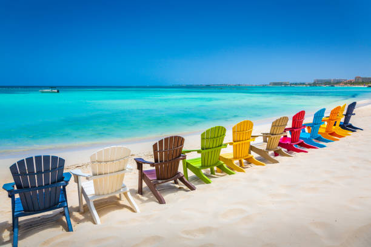
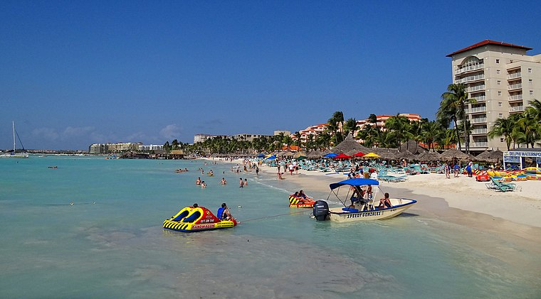
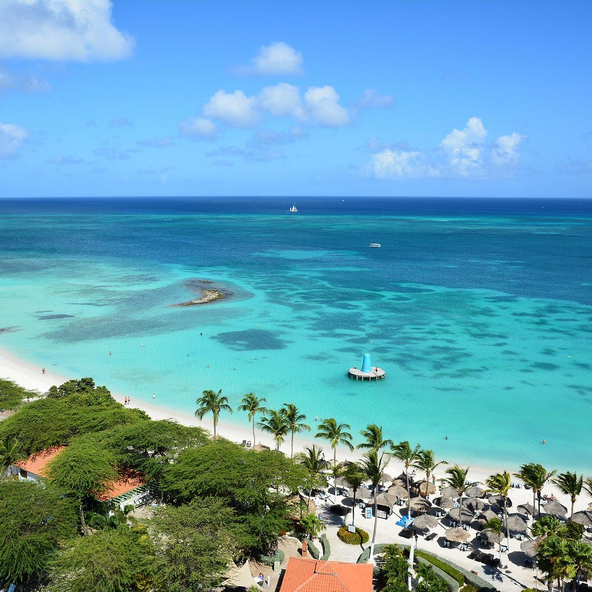
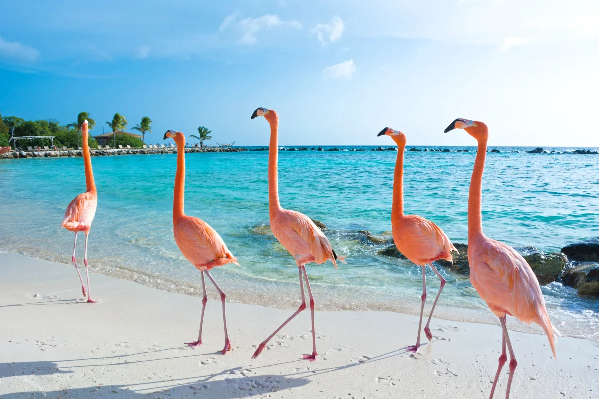
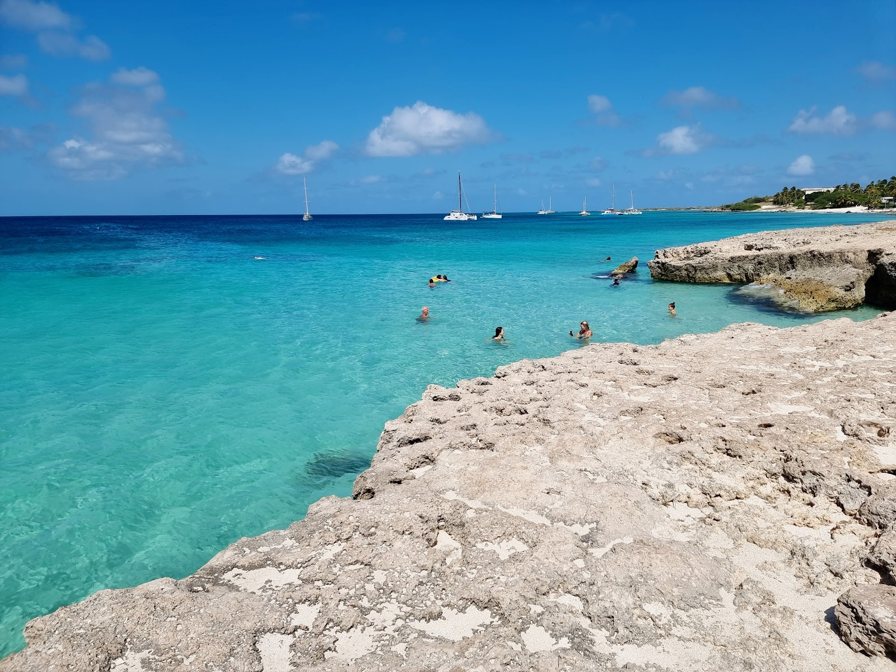

Las mejores playas de la isla feliz
Arashi beach
Arashi se encuentra en Noord, en el límite de la zona residencial de Palm Beach y justo al norte de Malmok Beach.
ni bien te metés podes ver muchos pecesitos pasandote entre los pies. De más está decir que es una playa ideal para hacer snorkel (junto con Boca Catalina que es otra playa que está al lado de Arashi).
Palm beach
Palm Beach está llena de palmeras, casinos, concesiones de deportes acuáticos, muelles, bares de playa, restaurantes y tiendas.
a unos 6 kilómetros al noroeste de Oranjestad, la capital de Aruba.Una variedad de hoteles de gran prestigio se encuentran aquí,
Eagle beach
la playa ganadora del premio Tripadvisor Travelers' Choice 2023 como la #1 mejor playa del Caribe y la #2 del mundo.
Queda ubicada al sur de la ciudad y lejos del bullicio
Palm island
La Isla de Palm es una pequeña isla alargada frente a la costa de la isla principal de Aruba, al oeste de la localidad de «Pos Chiquito» y al sur del Aeropuerto Internacional Reina Beatriz, de Barcadera, y de la ciudad capital Oranjestad
Boca catalina
Boca Catalina es una playa remota ubicada en el extremo noroeste de Aruba, pero es accesible en autobús desde Oranjestad; las líneas 7A y B paran en la playa. Está a 5 minutos en coche de los complejos turísticos de Palm Beach y se encuentra en la carretera principal que lleva al faro de California.
Con suerte podrás ver algún ejemplar de tortuga verde marina, una especie en peligro de extinción. En caso que veas una tortuga, por favor no la toques ni alimentes, ya que eso es perjudicial para ellas.
